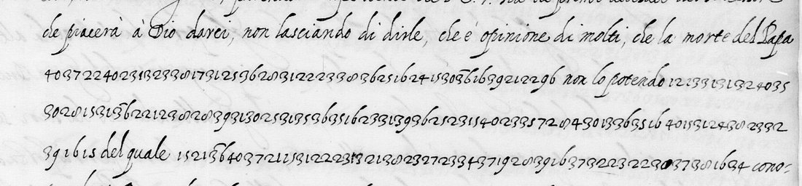
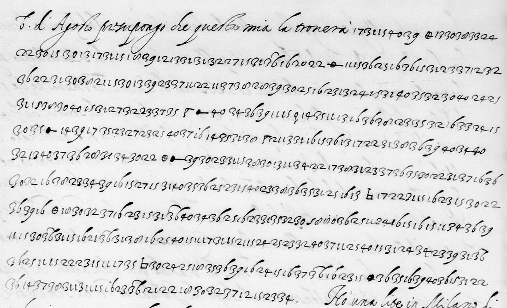

At a glanceKnown key applied · complete
- The letter
- The Duke of Mantua to his uncle Louis de Gonzague, duc de Nevers, 17 September 1590 (catalogue item 188); the politics is in figures.
- Where
- BnF fr. 3979 f. 92r–93r; DECODE R4176.
- The cipher
- Two-digit figures written without breaks: 11–40 are letters with homophones, 41–99 words and names, plus signs for titles and common words.
- How it was read
- The key is BnF fr. 3995 f. 64, Per Cavare 1590 (no. 35 in Tomokiyo’s list), applied unchanged. An Italian language model chose between look-alike figures (3/9, 0/8, 7/8) when dividing the digits into pairs.
- What it says
- Many believe Sixtus V was poisoned by the Spaniards; Italian powers want nothing more than Henri IV’s conversion; Mantua assures Nevers of his devotion to the French crown.
- Still open
- Four short garbled stretches (writer’s slips and one looped code group), the same on both images. No earlier decipherment was found.

01 The letter and the key
The letter is dated 17 de Sett.re 1590 and addressed Ill.mo et Ecc.mo Sig.r mio Zio Oss.mo. It answers four letters of Nevers (12, 27 and 20 July, 6 August) and runs from f. 92r to f. 93r. The clear passages deal with family and business: Giulio Capilupi chosen as the new agent in place of Malegnano, the citadel of Casale, the outlaw Piccolomini, the imprisonment of Nevers’s daughter by the League, and a lawsuit at Milan with the Duchess Dorothea of Brunswick. The politics is in figures. Near the end the writer comments on the ciphers themselves. The cipher Nevers sent is molto artificiosa but hard to use without errors, so Nevers should use “the last one I sent you, which is used in this letter too”.
That last cipher is in Nevers’s key collection: BnF fr. 3995 f. 64, Per Cavare 1590 (Gallica btv1b525085665, view 131), no. 35 in Tomokiyo’s list. Its values are:
- Letters, with homophones: 11 m, 12 f, 13 a, 14 h, 15 e, 16 n, 17 p, 18 g, 19 b, 20 z, 21 d, 22 a, 23 t, 24 u, 25 o, 28 u, 30 l, 31 r, 32 i, 33 c, 34 t, 35 o, 36 e, 37 i, 38 a, 39 o, 40 s. An overbar on a letter figure doubles it.
- Words and names, 41–99: 42 Mons. di, 43 Gran Duca di, 45 Papa, 47 Re di, 55 Cardinale di, 58 Duca di, 60 Legato, 80 Francesi, 81 Spagna, 84 Francia, 96 Spagnoli, 97 Roma; 26 Inglesi, 27 Venetia and 29 Consiglio sit among the letters.
- Signs: ● che, a barred θ per, ⊔ et, ⊕ S. M.tà, ⊡ S. Ecc.za, a flagged Γ S. A., T mille, + conto, and others.
02 The decrypted text
Deciphered passages in bold, clear text plain; [..] is a stretch not decrypted, [?] a doubtful word. The writer’s spelling is kept.
f. 92r: the death of Sixtus V
… non lasciando di dirle, che è opinione di molti, che la morte del Papa sia stata procurata con veleno da Spagnoli, non lo potendo far risolvere a favor loro contro cotesto Regno di Francia, la conservatione del quale è desiderata da tutti i buoni Italiani, conoscendosi P. che, anichilata cotesta potenza, li medesimi Spagnoli procureranno di sottoporsi a ognuno [..] S. Ecc.za, da che mi spiace per i molti buoni effetti che mi prometto che ne debbano seguire, et veram.te da tutti i Potentati Italiani non è cosa più desiderata della conversione del Rè al Catolicismo, il che seguendo, si vede chiaramente aperta alla via della grandezza [..] a questo Regno di Francia.
“Many believe that the Pope’s death was procured with poison by the Spaniards, since they could not bring him to decide in their favour against this Kingdom of France, whose preservation all good Italians desire, knowing that once that power is destroyed the Spaniards will try to subject everyone …; nothing is more desired by all the Italian powers than the King’s conversion to Catholicism, if that follows, one sees the way clearly open to the greatness … of this Kingdom of France.”
f. 92v: the King’s conscience
… cose tutte [..] che per interesse di stato la devono far risolvere a correre la fortuna di [..] come fanno Venetia et sì tutti gli altri principi et nobiltà francese [..] dubitando stante la [..] la sua conscienza, che in così universal concorso se le possa opporre mancamento alcuno per conto della religione. Mi è piacciuto infinitam.te intender che quello che il Legato hà scritto in Italia nel partir di Monsignor [..] sia stato menzognero …
Nevers, a Catholic who had joined Henri IV, should “for reasons of state resolve to share the fortune of [the King], as Venice and all the other princes and the French nobility do …, [no longer] fearing that in so universal a concurrence any fault could be laid against his conscience on account of religion.” What the Legate (Caetani) wrote to Italy has proved a lie.
f. 93r: a message for the King

… presupongo che questa mia la troverà presso S. M.tà, alla quale la priego far riverenza per me, con certificarla della ottima mia volontà verso il suo Re, al servitio di che, sì come non hò mancato in quello che hò potuto sin hora di darne c[..] parte, e si stia sicura la S. M.tà per[?] oltre la mia particolar inclinatione, et verso cotesta corona, et parimente la con S. M.tà gli interessi contro il [..] comune nemico, me le renderà sempre devotissimo servitore, come a tempo et luogo conveniente conoscerà chiaramente da gli effetti.
Nevers is to assure the King of Mantua’s goodwill. Mantua’s own inclination, and shared interests against the “common enemy” (Spain), will make him the King’s most devoted servant, as the King will see from the effects at the right time and place. For an Italian prince bordering Spanish Milan, this was a guarded pro-Bourbon declaration, sent under cipher in the month after Sixtus V’s death.
03 Method
- Prior work. DECODE (no decryption on the record, cipher type unknown) and Tomokiyo’s nevers.htm. Tomokiyo lists the key, not this letter. No earlier decipherment was found.
- Key. Tomokiyo’s description of no. 35 pointed to fr. 3995 f. 64, which was transcribed from the Gallica image.
- Transcription. The digit runs were transcribed from the DECODE high-resolution strips: f. 92r in the main session, ff. 92v and 93r by two sub-agents. Unseparated figures lose their pairing whenever a digit is misread.
- Decoding. A decoder (
beam.py) divides the digits into pairs and scores the candidate texts with the project’sit-cinquecentolanguage model. It tries the alternatives 3/9, 0/8, 7/8 and 27/28 where the hand makes them look alike. The values of the graphic signs were then taken from the key sheet. - Retry. The doubtful lines were transcribed again at triple scale and decoded again. This recovered most of ff. 92v and 93r.
- Blind re-transcription. Every open stretch was then transcribed again at four times scale by a sub-agent that had not seen the earlier digits, and the two versions compared. This gave contro cotesto Regno di Francia, tutti i buoni Italiani, anichilata cotesta potenza, si vede chiaramente, far riverenza per me and in quello, and confirmed sottoporsi as written: 56 more tokens.
- Second image. The BnF microfilm of fr. 3979 on Gallica (btv1b9060544v, views 160–162) was used to check every open stretch. On f. 93r the q-like sign is the key’s ♀ non and the next ● che, and the microfilm gives 14 35 31 38 hora: sì come non hò mancato in quello che hò potuto sin hora, 15 more tokens.
04 What remains
45 of 923 tokens are open (measured from the transcriptions; reading.md). Each stretch was transcribed again independently at four times scale twice, and again on the Gallica microfilm, without a fit:
- f. 92r, line 5: about 10 tokens (la nda a a di) before S. Ecc.za.
- f. 92r, line 8: about 27 tokens in the middle, including 26 Inglesi. Probably the writer’s own slips; a search allowing any one digit to be changed finds no Italian.
- f. 92v: about 6 tokens after dubitando stante la (la mondezza a me as written). The three signs there are nulls on the key.
- f. 93r, line 8: a looped, dotted code group before comune nemico, perhaps [Re di] Spagna.
No other letter in this cipher is on DECODE, and there is no clear copy. The key is complete. The digits there are the same on the DECODE scans and the microfilm, so these are the writer’s own enciphering slips; only a second copy of the letter would settle them.
Full texts
The transcription and the decryption of every document on this page, so that the reading can be used and checked. Short files are shown here; all are in the repository.
BnF fr. 3979 ff. 92-93, Vincenzo Gonzaga to Nevers, Mantua, 17 Sept 1590
Vincenzo I Gonzaga, Duke of Mantua, writes to his uncle Louis de Gonzague, duc de Nevers: he reports the rumour that Sixtus V was poisoned by the Spaniards, welcomes Henri IV's expected conversion, and assures Nevers (for the King) of his devotion to the French crown against the 'common enemy', a guarded pro-Bourbon declaration of September 1590. Deciphered with Nevers cipher no. 35 (BnF fr. 3995 f. 64).
Transcription
# BnF fr. 3979 f. 92r (DECODE R4176 images P2-P4). Transcribed from the DECODE scans at 3x.
# after "che la morte del Papa"
p1l1 | 40372240231323381731259628312222338362516241530361639212296
# decode: sia stata procurata con veleno da [96 Spagnoli]
# after "non lo potendo" (runs on to "del quale")
p1l1b | 12133131324035
# decode: far riso-
p1l2 | 802815313622129828393130253135363516233139362523154023357284301336351640153124302332
# was: 8028153136221298283931302531355936351623313993625123114023357204301336351640153124302332
# note (blind re-read 4x, 21 Sept): no 59; 36 35 16 23 31 39 = contro, 36 25 23 15 40 23 35 = cotesto (one stray 1 after 36 25 omitted), 72 84 = Regno di Francia (ct had 72 04).
# decode: -[80 = 30 l?]uere a fauor loro contro cotesto [72 Regno di] [84 Francia] la conser-
p1l3 | 391615
# decode: -uatione
# after "del quale"
p1l3b | 152136403721113122222313213823322723343719283916373223223037381634
# was: 152136403721113122222313213823322723343719283916379373222322290{blot}3737381634
# note (blind re-read 4x, 21 Sept): under the blot is the 0 of 30: 16 37 | 32 23 22 30 37 38 16 34 = ni | italiani.
# decode: e desiderata da tutti i buoni italiani
# after "conoscendosi P.{sign}"
p1l4 | 381632361437303823223635231540233817352315162022{M}30371115213640113496
# was: 38163322361433730382232223635231540233817352315162022{M}30371115213640113496
# note (blind re-read 4x, 21 Sept): 38 16 32 36 14 37 30 38 23 22 = a n i c h i l a t a (one stray 2 in "3 2 2" omitted).
# decode: anichilata cotesta potenza {M} li medesimi [96 Spagnoli]
p1l5 | 173125362431153113163921344025233517353140322225181628163530131616212222382137{⊡}2138{che}
# was: 173125333624311531131639213440252333351733353140322225181628163530131616212222382137{⊡}2138{che}
# note (blind re-read 4x, 21 Sept): no extra 33s: 17 31 25 36 24 = procu-, 40 25 23 35 17 35 31 40 32 = sottoporsi as written. Tail still unread.
# was: 1731253336243115311131363921344025233315173359353140322225181620163530131616212222382137{⊡}2138{che}
# note: re-read at 3x (y≈500): 31 13 16 39 (not 31 11 31 36 39) = "rano"; 28 16 35 (not 20 16 35) = "uno". 33 36 24 = "ceu" as written (procureranno with a stray 36). 23 33 35 17 33 35 31 40 32 = "tcopcorsi": sottoporsi fits the sense but needs 33->34 and a dropped 33, left as written. Tail 30 13 16 16 21 22 22 38 21 37 unresolved.
# decode: procureranno di sottoporsi a ognuno [la nda a a di] {⊡ S. Ecc.za} da {che}
# after the ☐ line: runs to "per i molti buoni"
p1l6 | 11344017373730383615
# decode: mi spiace
# after "per i molti buoni"
p1l6b | 1512362332{che}11341731391115233225{che}161521361913163940151824373116
# decode: effetti {che} mi prometto {che} ne debbano seguire
# after "della conuersione del Re al Catolicismo"
p1l7 | 3230{che}4015182836162139403424152115361437383122221115161623152222171531232222303038
# was: 3230{che}40111518283616211339403434241521111536143737383122221115161623152222171531232222303038
# note (blind re-read 4x, 21 Sept): no 11 after 40, no 13 before 39, one 34, one 37: 40 34 | 24 15 21 15 = si vede.
# decode: il {che} seguendo si vede chiaramente aperta alla
# after "alla" (line 8, to "Serenissimo")
p1l8 | 273422213330381831381621152022222132{che}15233133303833332438322115223336222132223623262215223315402333397284
# was: 27342221333038381831383816221115201522222132{che}1523313330383833332438322115223336222132223623262215223315402333339720
# note: re-read at 3x (y≈1200): 38 18 31 38 16 21 15 20 22 22 = "a grandeza a" (one 20 only, as written); 33 in 21 33 30 38 probably the scribe's 36 (e): "della". End re-read 39 72 84 (Regno di Francia), not 33 97 20. Middle 15 23 31 33 30 38 38 33 33 24 38 32 21 15 22 33 36 22 21 32 22 36 23 [26] 22 15 22 33 15 40 23 33 39 still nonsense (etr-la-acqu-ati de acce a di acet [Inglesi] ae a qu est co); 33 = q throughout (key has no q), so "a qu[e]sto Regno di Francia" at the end.
# decode: [u]ia d[e]lla grandeza a di {che} [e tr.la acqu.. ati de acce a di acet (26 Inglesi) ae] a qu[e]sto [72 Regno di] [84 Francia]Transcription
# f. 92v (IMG_R4176_I24620_P5 overview; strips P7 = l1-l5, P8 = l6-l8)
# passage 1: after "dell'altra lega, cose tutte" ; ends before clear "Mi è piaciuto infinitamente intendere che quello"
p92vl1 | {0Δ}{●-θ-}32162315313640152137402313232530132115243516391217
p92vl2 | 3131324035302415313622363931153115301312393123281638{T}{4-sign}36251115123816393327
p92vl3 | 38403423242337183037383023313217313716363717{⊔}163919373023221231131636154036
p92vl4 | {9}21241937233816213940231316231530221139162115203822111530224024133625164036371516
p92vl5 | 2038{●-}32163625403428163424153140223036351636253140394015303617254022391725
p92vl6 | 31151113163638111516233522303336241635{θ}362516233921153038311530321837351615
# note: l1 end "1217" read as written (7 clear) though "far" (1213 31) would fit; l3 after 22 I may have an extra 2 (read 2212311316 = "francese"); l4 "22111530 22" = "amela" where "della" (2115303022) is expected; l6 "3336" (alc-e-uno) the 36 is doubtful; ω-shaped 8 after 1 read as 18 (g)
# decode: {0Δ}{●-θ-} interesse di stato la deuono f[p] | risoluere a correre la fortuna {T}{4-sign} come fanno c[27=Venetia] | a sì tutti gli altri principi {⊔} nobiltà francese {9} dubitando stante la mondezza a me[della?] la sua conscienza {●-} in così universal concorso se le posa [possa] opporre mancamento alc(e)uno {θ} conto della religione.
# passage 2: after "intendere che quello"; clear "ha scritto in Italia nel parti S." follows
p92vl7 | {●-}323060
# decode: {●-} ti l [60] -> "quello {●-}[..][60] ha scritto" (60 a code word; 32 30 may be 'il')
# passage 3: after "nel parti S."; clear "ò ò sia stato menzognero" follows
p92vl8 | {T}112516403218163931
# decode: {T} Monsignor -> "{T} Monsignor ... sia stato menzognero"Transcription
# f. 93r (img/IMG_R4176_I24620_P10.jpg; overview P9). P11 = lower half, clear text only; P13/P14 belong to other pages (no cipher).
# Clear text before: "... presupongo che questa mia la trouerà" | after: "Hò una lite in Milano di molta importanza ..."
# Signs: {circle-plus} = circle with cross; {bar-circle} = small circle on a horizontal bar; {T-sign} = T/Γ with hooked foot;
# {box-sign} = square with a vertical stroke rising from it (like ь); {blot-sign} = inked blob with bar (l10); {q-sign} = q-like 9 with descender standing apart (l4).
p93l1 | 1732154039{circle-plus}1330383324
# was: 1732154039{circle-plus}133030133224
# note: re-read at 3x: 13 30 38 33 24 = "alla qu" (33 = q; the key has no q), running on to l2 "22 30 15" = "ale". 17 32 15 40 39 = "presso" as written (32 for 31, one s).
p93l2 | 22301530131732151839121332313227153136162022{bar-circle}111536251636153123371232
# was: 22301530131732151839121331213132227113123616162022{bar-circle}111536251636153123371232
# note (blind re-read 4x, 21 Sept): 12 13 32 31 32 27 15 31 36 16 20 22 = far riverenza (32 for 31 and 27 for 28, the writer's habits).
p93l3 | 3622313038211530133923371122221137382839302516231324153140353230402425
# was: 36223130382115301339239711222118738282839302516231324153140353230402425
# note: re-read at 3x: 39 23 37 11 22 = "otima" (the 97 was the 3 of 37 plus a flourish), then 22 11 37 38 = "(a) mia" (one 22 extra as written), 28 39 30 25 16 23 13 = "volontà".
p93l4 | 311538304015312732233735{Γ}{●}40343639111591435111316363823335321633324 15
# was: 311538304015312732233735{Γ}{●}40343639111591435111316363023335321633324 15
# note: Gallica btv1b9060544v f162: the figure after 36 is the looped 8, not 0: 14 35 11 13 16 36 38 23 [33] 35 = "ho mancato" (one stray 33, writer's slip). The q-like sign before 14 is the key's ♀ = non, and the {●} after {Γ} = che: "si come non ho mancato in quello che ho potuto sin hora" (read, 21 Sept, Gallica pass).
# note (blind re-read 4x, 21 Sept): 32 16 33 24 15 | l5 30 35 = "in quello" (33 = q), not "[..] e lo".
# was: 311538304015312732233735{T-sign}{bar-circle}40343639111591435111316363023335321633324 15
# note: re-read at 3x: the two signs after "servitio" are Γ (di, as on f.92v "{T} Monsignor") and a filled ● with bar (che), not the θ-bar per sign.
p93l5 | 3035{bar-circle}1439173523272325403716143531 38{T-sign}21133116153613172231303639403440
# was: 3035{bar-circle}143917352327232540371614935323080{T-sign}21133116153613172231303639403440
# note: Gallica btv1b9060544v f162: after 40 37 16 (sin) the figures are 14 35 31 38 = "hora"; DECODE's 9 was the descender of the 3, and 32 30 80 are 31 38 (ʅ = 1, looped 8).
p93l6 | 32134037362031343022{circle-plus}{bar-circle}39302331153030131134222173031233736353022313716
p93l7 | 903216382334391615271531403536252315402330363531251613{box-sign}17222311151623153022
p93l8 | 363916{circle-plus}18183032371623153136403436251623391353230588183625112441615161511343639
p93l9 | 1115303631151621363130162540151117311521152425233240371125401531243423393136
p93l10 | 362511152222315111735{box-sign}302425183536391624151637361623 15{blot-sign}363516394036153122
p93l11 | 361437383113111516233621222118303237712152334
# note: "27" read in l3(end 4-5)/l4/l5/l7 each time where context needs 28 = u/v (servitio, potuto, e verso): the scribe's 8 there looks like 7, or I misread; left as seen.
# note: l1 "1732154039" decodes pieso (preso/presso?), 32 may be 31. l1-l2 "133030133224|22301530 13" = alla i u a l e l a: unclear.
# note: l2 "...121331213132227113123616162022" (x 1150-2150) uncertain digit by digit; decodes far d r i a [71?]..nn za; possibly ...licenza/presenza.
# note: l3 "2397" -> probably 23 37 (ottima); "2118738282" before "39302516 2313" (volontà) unclear, 8s/0s uncertain.
# note: l4 "1636302333" after 14351113 probably "ho mancato"/"ho mandato"; digits uncertain.
# note: l5 "14935323080" uncertain (tens 9 impossible); l6 "2217303123" uncertain.
# note: l7 "17222311151623153022" decodes patmentela (parimente la?); a digit may be lost.
# note: l8 "1818" before 3032 37 (gli) may be one 18; "13532305881836251124416" = contro il ? comune: several digits wrong, phase lost here.
# note: l10 start "3625111522223151117 35" has one 2 too many for "come a tempo"; l11 "3237712152334" -> gli effetti, 7 likely misread.
# note (pass 2): l2 middle re-read at 3x, digits still do not give a word; "far riverenza per me" fits the sense but is not in the digits as seen. l5 "14 9 35 32 30 80" after "sin" (hora?) still unread. l8 re-read: 36 25 16 23 [39 13 53 23 0] reads best as 31 35 32 30 ("contro il"), then 4 looped glyphs (5? 8 8 8, dotted) = a code group before 36 25 11 24 16 15 "comune"; left as transcribed.
# decode: presso {⊕ S. M.tà} alla quale la priego far riverenza {θ per} me con certificarla della otima (a) mia volontà verso il suo Re, al servitio {Γ di} {● che} si come {♀ non} ho mancato in quello {sign: che} ho potuto sin hora {Γ di} darne c[..] parte, e si stia sicura la {⊕ S. M.tà} {θ per} oltre la mia particolar inclinatione e verso cotesta corona {⌊ et} parimente la con {⊕ S. M.tà} gli interesi contro il [code, 58/81/88?] comune nemico me le renderà sempre devotissimo servitore come a tempo {⌊ et} luogo conveniente {●} conoscerà chiaramente da gli effetti.
# was-decode: presso(?) {circle-plus} alla ... la piego far ... {bar-circle} me concertifi|carlo della ottima ... volontà verso il suo Re al servitio {T-sign}{bar-circle} si come {q-sign} ho man(cato/dato) ... con ... e lo {bar-circle} ho potuto sin hora ... {T-sign} darne ca... parle o si sta sicuri la {circle-plus}{bar-circle} oltre la mia particolar inclinatione e verso cotesta corona {box-sign} pa(ri)mente la con {circle-plus} gli interessi contro il ... comune nemico me le renderà sempre devotissimo servitore come a tempo {box-sign} luogo conveniente {blot-sign} conoscerà chiaramente da gli effetti.Decryption
# Vincenzo Gonzaga to Nevers, Mantua 17 Sept 1590 (BnF fr. 3979 ff. 92–93): working reading
Clear text is plain, deciphered passages are **bold**, `[..]` marks a piece still unread, `[?]` a doubtful
word. Code words and signs are resolved from the key (fr. 3995 f. 64) and shown in the reading. The spelling is the
writer's (single consonants, *u* for *v*). The digits, with the old readings kept in `# was:` lines, are in
`ct_92r.txt`, `ct_92v.txt` and `ct_93r.txt`.
## f. 92r
*17 de Sett.re 1590.* Ill.mo et Ecc.mo Sig.r mio Zio Oss.mo
Mi trovo debitore di risposta à quattro di V. Ecc.a, l'una del 12, l'altra del 27, la terza del 20 di Luglio, et
l'ultima del 6 Agosto, alle quali andarò rispondendo per ordine, pregandola ad iscusarmi se hò tardato à farlo,
perche la morte di N. S.re successa alli 27 del passato à 23 hore, n'è stata cagione, parendomi ispediente che l'E. V.
sia de primi avisati del successore che piacerà à Dio darci, non lasciando di dirle, che è opinione di molti, che la
morte del Papa **sia stata procurata con veleno da Spagnoli**, non lo potendo **far risolvere a favor loro
contro cotesto Regno di Francia, la conservatione** del quale **e desiderata da tutti i buoni Italiani,** conoscendosi P.— **che, anichilata cotesta
potenza, {M} li medesimi Spagnoli procureranno di sottoporsi a ognuno [..] S. Ecc.za da che mi spiace** per i molti
buoni **effetti che mi prometto che ne debbano seguire**, et veram.te da tutti i Potentati Italiani non è cosa più
desiderata della conversione del Rè al Catolicismo, **il che seguendo, si vede chiaramente aperta alla via della
grandeza a di che [..] a questo Regno di Francia.**
S'io non hò mandato sin hora altro huomo in iscambio del Malegnano, è proceduto dalla carestia de soggetti fedeli,
sufficienti, et sbrigati, tuttavia hò finalm.te fatto elettione di Giulio Capilupi, il quale frà poco si porrà in
camino per costà. Ringratio V. E. degli amorevoli avertimenti che l'è piacciuto darmi intorno alla fabrica della
Cittadella di Casale, et ne farò quel capitale nell'essecutione che meritano la prudenza, intelligenza, et
amorevolezza di lei. Farò pigliar informatione di quel Vincenzo Badalocchio proposto all'E. V. per sec.rio in Roma, et
della relatione che ne haurò, ella ne sarà fedelm.te avisata. Fù vera la retentione in casa del
## f. 92v
Patriarca Alessandrino, et la carceratione di due P.ri Giesuiti per haver questi à suggestione di quello nelle
prediche moteggiato contro le attioni di S. S.tà in questi motivi di Francia, mà furono liberati poco dopo. Il
Piccolomini è dichiarato ribelle del Gran Duca per molti suoi misfatti, mà non già perche l'havesse trattato in Siena,
mà egli hà la testa che vale per le taglie poste da S. A. et da altri Potentati molte decene di migliaia di scudi,
et è così perseguitato dal Gran Duca in tutti i modi che hà carestia di terreno, et è di già abbandonato da suoi
seguaci, sì che non può tardare à dar nella rete, et tanto basti per risposta della sua del 27. Stata aperta à Lione
da deputati della Città. Ringratio V. E. degli avisi quali le è piacciuto darmi, et mi spiace sommam.te il danno
ch'ella patisce nel suo Palaggio di Parigi, mà molto più la prigionia della S.ra sua figlia, et mia cugina, et
l'occupatione de suoi beni fattale da quelli della lega, cose tutte [{0Δ}] **che per interesse di stato la devono
far risolvere a correre la fortuna di [{4-sign}] come fanno Venetia et sì tutti gli altri principi et nobiltà
francese [{9}] dubitando stante la [..] la sua conscienza, che in così universal concorso se le possa opporre
mancamento alcuno per conto della religione.** Mi è piacciuto infinitam.te intender che quello **che il Legato** hà
scritto in Italia nel partir **di Monsignor** [..] sia stato menzognero, et prometto a V. E. che ne godo altretanto di
presente, quanto grande fù il travaglio che m'apportò l'aviso in contrario che hebbi di buonissimo luogo. Stante
quello che V. E. mi scrive colla sua del
## f. 93r
6 d'Agosto, presupongo che questa mia la troverà **presso S. M.tà, alla quale la priego far riverenza per me, con
certificarla della ottima mia volontà verso il suo Re, al servitio di che, sì come **non hò mancato** in quello
che hò potuto **sin hora** di darne c[..] parte, e si stia sicura la S. M.tà per[?] oltre la mia particolar
inclinatione, et verso cotesta corona, et parimente la con S. M.tà gli interessi contro il [..] comune nemico, me le
renderà sempre devotissimo servitore, come a tempo et luogo conveniente conoscerà chiaramente da gli effetti.**
Hò una lite in Milano di molta importanza con la Duchessa Dorotea di Bransvich per servitù della quale mi
bisognarebbe giustificare ch'ella goda in Francia la Contea di Clermont che era del marito, di che suppl.co V. E. a far
pigliare quanto prima diligente informatione, et trovandosi che così sia, farne cavar fede autentica, et mandarmela
subito, poiche giustificato questo punto la vittoria restarebbe sicura dal canto mio. Se bene la Zifra mandata da
V. E. è molto artificiosa, nondimeno porta seco qualche difficoltà, massime quando si fà qualche errore nel zifrato,
però le piacerà servirsi dell'ultima che le mandai, la quale s'è adoperata anco nella presente. A Firenze hò fatto
inviare le lettere mandatemi dall'E. V. alla quale bacio le mani pregandole da Dio longo, et felice corso di vita [..]
(The close and signature, below P11, were not re-read in this pass.)
## Tokens read vs unread
Gallica pass (21 Sept): the six stretches were re-read on the independent BnF microfilm (Gallica btv1b9060544v, canvases 160-162). 93r "sin hora" and "hò mancato" read (+14, and 93r l5 is 1.5 tokens shorter, 3 spurious digits); the 92r l5 tail shows one 16, not two; 92r l8 middle, 92v and the 93r l8 code group match the DECODE digits and stay unread.
One token is one figure pair or one sign; nulls count as read. Totals are measured from the digit lines of
`ct_92r.txt`, `ct_92v.txt`, `ct_93r.txt` (digits ÷ 2 + signs, the {blot} not counted), after the blind 4x re-read of
21 Sept removed the spurious digits it found (hence 926, not the earlier 945). Unread counts are the lengths of the
unread stretches, counted in pairs.
| page | tokens | unread | read |
|---|---|---|---|
| f. 92r | 328 | 37 | 291 |
| f. 92v | 233 | 6 | 227 |
| f. 93r | 362 | 2 | 360 |
| **total** | **923** | **45** | **878 (95.1%)** |
Read in the blind re-read (21 Sept, 4x, digits taken before the old transcription was opened): 92r "contro cotesto
Regno di Francia", "tutti i buoni Italiani", "anichilata cotesta potenza", "sottoporsi" as written, "si vede
chiaramente"; 93r "far riverenza per me", "in quello". Two stray digits (92r l2, l4) are left out as writer's slips.
Unread pieces (each re-read independently at 4x twice; blocker: illegible, writer's slips or looped glyphs):
- 92r l5 tail (~10): "la nda a a di" (30 13 16 16 21 22 22 38 21 37) before ⊡.
- 92r l8 middle (~27): "e tr.la acqu.. ati de acce a di acet [26 Inglesi] ae" before "a questo Regno di Francia".
Writer's slips; re-read twice and run through the beam with any-digit substitution, no Italian.
- 92v (~6): "la mondezza a me" (dubitando stante la ..). The signs {0Δ}, {4-sign}, {9} are nulls on the key.
- 93r l4 middle: read. The q-like sign is the key's ♀ = non and the ● after it = che: "sì come non hò mancato in quello che hò potuto sin hora" (digits 14 35 11 13 16 36 38 23 33 35, one stray 33, writer's slip). (The rest was read from the Gallica microfilm, btv1b9060544v f162: 36 38, not 36 30, gives "mancato" with one stray 33.)
- 93r l5: read from the Gallica microfilm (btv1b9060544v f162) as 14 35 31 38 "hora"; no longer unread.
- 93r l8 (~2): a looped, dotted code group before "comune nemico".Translation
# Vincenzo Gonzaga to Nevers, Mantua 17 Sept 1590 (BnF fr. 3979 ff. 92-93): English translation
Translation (Claude Opus 5.5, 23 Oct 2026) of the working reading `reading.md` (clear text with the deciphered
passages, key BnF fr. 3995 f. 64). Deciphered passages are **bold**, as in the reading. Same holes: `[..]` a piece
still unread, `[?]` a doubtful word, `[{…}]` an unread code group or sign. The close and signature were not read.
## f. 92r
*17 September 1590.* Most Illustrious and Most Excellent Lord, my most honoured Uncle,
I find myself owing an answer to four letters of Your Excellency, one of the 12th, another of the 27th, the third of
the 20th of July, and the last of the 6th of August, which I shall answer in order, begging you to excuse me if I
have been late in doing so; for the death of Our Lord [the Pope], which occurred on the 27th of last month at the 23rd
hour, has been the cause of it, since it seemed expedient to me that Your Excellency should be among the first
informed of the successor whom it will please God to give us. I do not omit to tell you that it is the opinion of
many that the Pope's death **was procured with poison by the Spaniards**, since they could not **make him resolve in
their favour against that Kingdom of France, the preservation** of which **is desired by all good Italians**, it being
recognised P.— **that, once that power is annihilated, {M} the same Spaniards will try to subject everyone [..] His
Excellency, at which I am sorry** for the many good **effects which I promise myself must follow from it**; and truly
nothing is more desired by all the Italian Potentates than the King's conversion to Catholicism, **which following,
one sees clearly open the way to greatness, at which [..] to this Kingdom of France.**
If I have not up to now sent another man in exchange for Malegnano, it has come from the shortage of subjects who
are faithful, sufficient and free; however, I have at last made choice of Giulio Capilupi, who will shortly set out
for your parts. I thank Your Excellency for the kind warnings you have been pleased to give me about the building of
the Citadel of Casale, and I shall make that use of them in the execution which your prudence, understanding and
kindness deserve. I shall have information taken about that Vincenzo Badalocchio proposed to Your Excellency as
secretary in Rome, and you will be faithfully advised of the report I shall have of him. The detention in the house
of the
## f. 92v
Patriarch of Alexandria was true, and the imprisonment of two Jesuit Fathers for having, at his suggestion, gibed in
their sermons at the actions of His Holiness in these movements of France; but they were freed shortly after.
Piccolomini has been declared a rebel by the Grand Duke for many misdeeds of his, but not because he had plotted in
Siena; but his head is worth many tens of thousands of scudi for the prices set on it by His Highness and by other
Potentates, and he is so pursued by the Grand Duke in every way that he is short of ground, and is already abandoned
by his followers, so that he cannot be long in falling into the net; and let this suffice for an answer to yours of
the 27th. [It was] opened at Lyon by deputies of the City. I thank Your Excellency for the news you have been pleased
to give me, and I am extremely sorry for the damage you suffer in your Palace in Paris, but much more for the
imprisonment of the Lady your daughter, and my cousin, and the seizure of your goods made by those of the League, all
things [{0Δ}] **which for reasons of state must make you resolve to run the fortune of [{4-sign}], as Venice does, and
so all the other princes and the French nobility [{9}], doubting, given the [..] your conscience, that in so
universal a concurrence any failing on account of religion could be laid against you.** I was infinitely pleased to
learn that what **the Legate** wrote into Italy at the departure **of Monseigneur** [..] was false, and I promise Your
Excellency that I rejoice at it now as much as the distress was great which the contrary news I had from a very good
quarter brought me. Given what Your Excellency writes me in yours of the
## f. 93r
6th of August, I presume that this letter of mine will find you **with His Majesty, to whom I beg you to make
reverence for me, assuring him of my very good will towards his King, in whose service, as I **have not failed** up to
**now**, in what I could, to give him c[..] part, and His Majesty may rest assured for[?] besides my particular
inclination, both towards that crown and likewise the interests, with His Majesty, against the [..] common enemy, will
always render me his most devoted servant, as at the fitting time and place he will clearly recognise from the
effects.**
I have a lawsuit in Milan of much importance with the Duchess Dorothea of Brunswick, for the service of which I would
need to prove that she enjoys in France the County of Clermont, which was her husband's; for which I beg Your
Excellency to have diligent information taken as soon as possible, and, if it is found to be so, to have an authentic
attestation of it drawn up and send it to me at once, since, this point being proved, the victory would remain secure
on my side. Although the Cipher sent by Your Excellency is very ingenious, it nonetheless brings some difficulty with
it, especially when some error is made in the enciphering; so you will be pleased to use the last one I sent you,
which has also been used in the present letter. I have had the letters sent me by Your Excellency forwarded to
Florence; I kiss your hands, praying God for a long and happy course of life for you [..]05 Sources
- BnF, Français 3979, ff. 92–93: DECODE R4176 (images behind a login).
- Key: BnF, Français 3995, f. 64, Per Cavare 1590, Gallica btv1b525085665, view 131.
- Satoshi Tomokiyo, Cryptiana, “Ciphers of the Duke of Nevers” (nevers.htm), cipher no. 35.
Transcriptions, decoder and working decryption: targets/gonzaga1590/ in the repository.